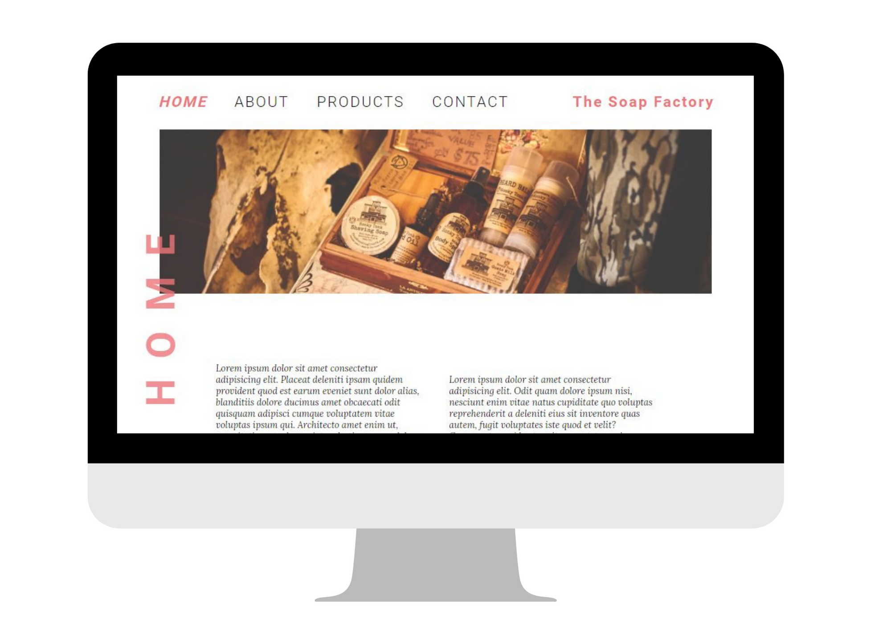

Web Experience

The Watering Can
Database-driven PHP web application implemented with a MySQL database. Designed and developed in a team of four in PhpStorm. In this project I practiced leadership skills to organize a team and communicate effectively to successfully develop a beautifully crafted dynamic website with advanced features.
I took initiave to select the members of my team, design the prototype, organize team meetings, create the database tables, and code most of the pages for this website. This project resulted in a heightened sense of knowledge for writing in PHP and MySQL.
